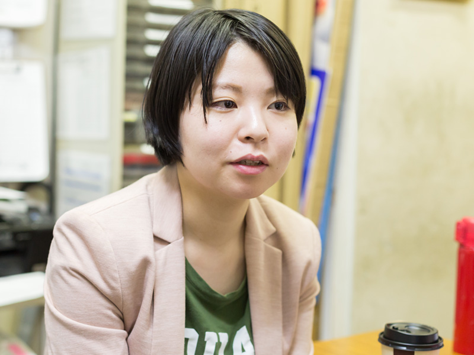

アシスタントマネージャー／ 2014 年入社 櫛󠄁渕 美咲
クリーニング店でのアルバイトを経て、2014年に入社。2015年に虎ノ門2丁目店の店長に抜擢され、2016年にはアシスタントチーフ、2017年にはアシスタントマネージャーにスピード昇格。 現在は全社的な労務管理なども担当している。
- 
-
自分の将来像を具体的に描いていける会社
私は学校を卒業後、地方のクリーニング店でアルバイトをしていました。正社員になろうと地元で就職先を探したのですが、なかなか見つからず上京することを決意。東京で接客の仕事を探していました。そのなかで出会った会社の一つがタイブレイクです。ここは社長が直接面接をしていたので、まずそこに驚きましたね。面接で印象的だったのは、入社後にどんな仕事をして、どんな風にキャリアアップしていくか、この会社で描ける将来像を具体的に説明してくれたことです。そのおかげで将来へのイメージが湧き、この会社なら目標を持って働いていけそうだと感じました。また、面接で社長の柔和な人柄が伝わってきたことも最終的にこの会社を選んだポイントです。
-
コミュニケーションを密にして職場を改善
入社後は本店での3ヶ月間の研修を受け、その後、虎ノ門2丁目店に配属となりました。配属から3ヶ月後には店長代理に抜擢され、さらに半年後には前例のない早さで店長になりました。入社当初の目標は「店長になる」ことでしたが、まさかこんなに早くなれるとは思っていませんでしたね。店長代理になったときに真っ先に取り組んだのはスタッフどうしのコミュニケーションの活性化でした。スタッフの連携が取れないと店舗全体の仕事が円滑に進まなくなる原因にもなりますし、何より楽しく働けませんから。積極的に声かけしていった結果、チームとしての一体感が生まれ、笑顔あふれる店舗づくりに成功。古株のスタッフに「櫛󠄁渕さんが店長になってから、職場がもっと楽しくなった」と言ってもらえたのは嬉しかったですね。
-
店舗だけじゃない、新たな挑戦でステップアップ
2016年にはアシスタントチーフ、2017年にはアシスタントマネージャーにスピード昇格。その後、総務担当としての仕事も任され、これまで社長がやっていた出勤簿の管理などの労務管理や社会保険の手続き、役所への届け出などを引き継ぎ、労働環境の改善指導といったことも担っています。社長に教わりながら仕事を覚えている最中ですが、新しい挑戦にワクワクしています。当社ではやりたいことがあればどんどん挑戦させてくれるし、「何がやりたいかわからない……」といった場合にも社長がしっかり見てくれていて、ステップアップに繋がる道を示してくれます。今後はこれまで以上にスタッフの育成にも力を注ぎ、自分の店舗から新しい店長を輩出したいですね。